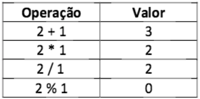

Questão 4.1- Elabore um Javascript que leia de uma página HTML (com formulários) dois números e imprima em uma tabela (gerada dinamicamente) o resultado das operações aritméticas soma, produto, divisão e resto da divisão (%) entre esses números Exemplo de tabela que deve ser gerada para as entradas os números 2 e 1. Utilize CSS para deixar a tabela com melhor apresentação:
